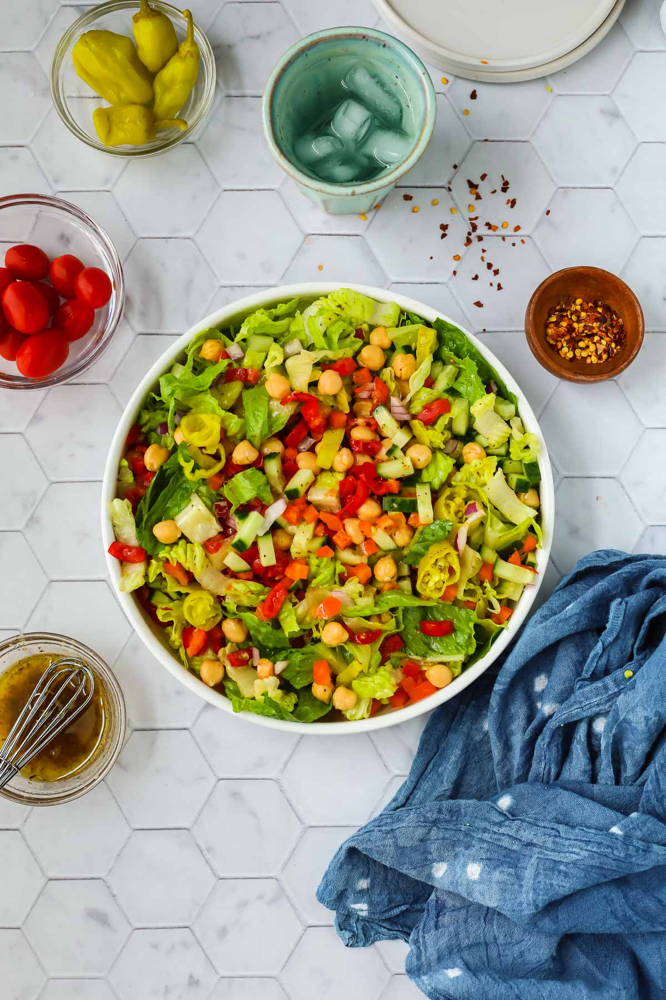

Salad

Vegan Chopped Salad
This vegan chopped salad is filled with a colorful mix of crunchy vegetables, spicy pepperoncini, and hearty chickpeas for a tasty salad that can be served as a side dish or a main dish.
Ingredients
- bell peppers
- pepperoncini
- romaine lettuce
- chickpeas
- red onion
Steps
- In a large bowl, combine the lettuce, vegetables, and chickpeas and toss until mixed.
- In a small bowl or jar, whisk together the oil, vinegar, mustard, and seasonings.
- Drizzle the dressing over the salad. Add additional salt to taste, if needed.